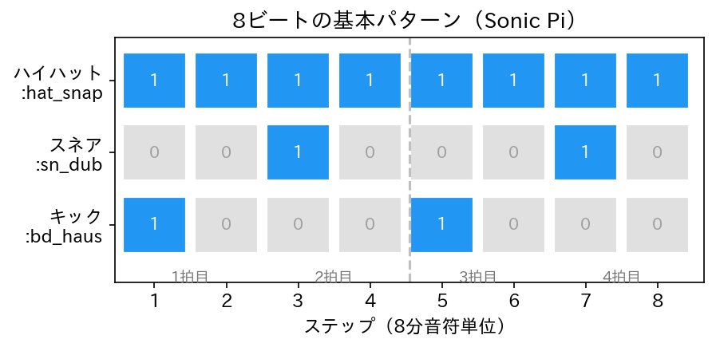
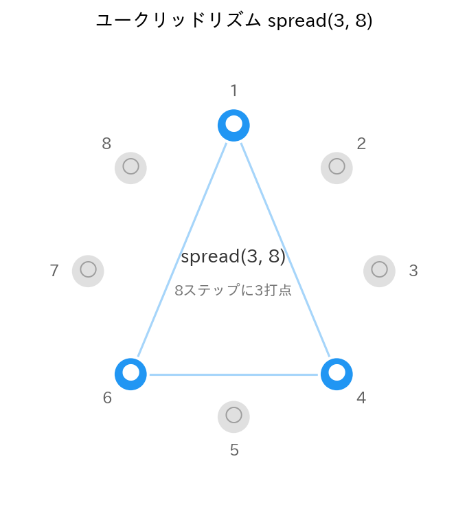

Lesson 12: Sonic Piでリズムパターン¶
このレッスンで学ぶこと¶
live_loopを使ってリズムを組み立てる方法を習得する- サンプル（
sample）の基本的な使い方を学ぶ - Lesson 7 で学んだリング（
ring）とtickをリズムパターンに応用する - 複数の
live_loopを重ね合わせてドラムパターンを作る - Lesson 11 のリストによるリズム表現と Sonic Pi のアプローチを対比する
Lesson 11 では Python でリズムを数理的に扱い、リストからドラムパターンを組み立てました。このレッスンでは Sonic Pi に戻り、live_loop とサンプルを使ってリアルタイムにリズムを鳴らします。Python では「全体を計算してから再生」でしたが、Sonic Pi では「ループの中で次々に音を出す」アプローチになります。
12.1 sample — サンプル音源を鳴らす¶
Sonic Pi にはドラムやパーカッションのサンプル音源が多数内蔵されています。sample コマンドで鳴らしてみましょう。
| サンプル名 | 楽器 | Lesson 11 での対応 |
|---|---|---|
:bd_haus |
キックドラム（バスドラム） | MIDI ノート番号 36 |
:sn_dub |
スネアドラム | MIDI ノート番号 38 |
:hat_snap |
ハイハット（クローズ） | MIDI ノート番号 42 |
Lesson 11 では Drum クラスに MIDI ノート番号を渡してドラム音を生成しましたが、Sonic Pi ではサンプル名を指定するだけで録音済みのドラム音が再生されます。
サンプルのパラメータ¶
sample にもパラメータを渡せます。
# 音量を変える
sample :bd_haus, amp: 1.2
sleep 1
# レートを変えると音高が変わる
sample :bd_haus, rate: 1.5
sleep 1
# 逆再生
sample :bd_haus, rate: -1
| パラメータ | 効果 |
|---|---|
amp: |
音量（1.0 がデフォルト） |
rate: |
再生速度（1.0 が原速、2.0 で倍速・1オクターブ上） |
pan: |
左右の定位（-1〜1） |
rate: を変えると再生速度と音高が同時に変わります。これは Lesson 1 で学んだサンプリングレートの概念と同じ原理です。
さまざまなドラムサンプル¶
Sonic Pi には多くのドラムサンプルが用意されています。いくつか試してみましょう。
# キック系
sample :bd_haus
sleep 1
sample :bd_boom
sleep 1
sample :bd_klub
sleep 2
# スネア系
sample :sn_dub
sleep 1
sample :sn_dolf
sleep 1
sample :sn_generic
sleep 2
# ハイハット系
sample :hat_snap
sleep 1
sample :hat_cab
音色のバリエーションが豊富なので、組み合わせ次第でさまざまなジャンルのリズムを作れます。
12.2 live_loop でリズムを刻む¶
Lesson 10 でも live_loop を使いましたが、ここではリズムに特化した使い方を学びます。
最初のビート¶
これだけで、キックドラムが1拍ごとに繰り返し鳴ります。live_loop はブロックの中身を自動的にループし続けます。
テンポの設定¶
use_bpm 120 でテンポを設定すると、sleep 1 が「1拍 = 0.5秒」になります。Lesson 11 で 60.0 / bpm と計算したのと同じ結果を、Sonic Pi は自動的に処理してくれます。
12.3 リングでリズムパターンを表現する¶
Lesson 11 では [1, 0, 0, 0, 1, 0, 0, 0] のようなリストでドラムパターンを表現しました。Sonic Pi では Lesson 7 で学んだリングと tick を使って同じことを実現できます。Lesson 7 ではメロディの音名をリングに入れましたが、ここでは「鳴らす（1）か鳴らさない（0）か」のパターンを入れます。
キックパターンをリングで書く¶
Lesson 11 のキックパターン [1, 0, 0, 0, 1, 0, 0, 0] をリングで表現します。
use_bpm 120
live_loop :kick do
sample :bd_haus if (ring 1, 0, 0, 0, 1, 0, 0, 0).tick == 1
sleep 0.5
end
sleep 0.5 は8分音符です。8ステップで1小節（4拍）になります。tick が返す値が 1 のときだけ sample が鳴ります。
| Lesson 11（Python） | Lesson 12（Sonic Pi） |
|---|---|
kick_pattern = [1, 0, 0, 0, 1, 0, 0, 0] |
(ring 1, 0, 0, 0, 1, 0, 0, 0) |
for step, hit in enumerate(pattern): |
.tick で自動的に順番に取得 |
if hit: で鳴らすか判定 |
if ... == 1 で鳴らすか判定 |
12.4 リズムの重ね合わせ¶
複数の live_loop を同時に動かして、ドラムパターンを重ね合わせましょう。
8ビートの基本パターン¶
use_bpm 120
# キック: 1拍目と3拍目
live_loop :kick do
sample :bd_haus if (ring 1, 0, 0, 0, 1, 0, 0, 0).tick == 1
sleep 0.5
end
# スネア: 2拍目と4拍目
live_loop :snare do
sample :sn_dub if (ring 0, 0, 1, 0, 0, 0, 1, 0).tick == 1
sleep 0.5
end
# ハイハット: 全ステップ
live_loop :hihat do
sample :hat_snap, amp: 0.6
sleep 0.5
end

Lesson 11 の Python コードでは辞書 patterns にまとめて for ループで一括処理しましたが、Sonic Pi では楽器ごとに独立した live_loop を作ります。各ループが並行して動くことで、リズムが重なり合います。
ハイハットのバリエーション¶
ハイハットのパターンを変えるだけで、リズムの印象が大きく変わります。
use_bpm 120
live_loop :kick do
sample :bd_haus if (ring 1, 0, 0, 0, 1, 0, 0, 0).tick == 1
sleep 0.5
end
live_loop :snare do
sample :sn_dub if (ring 0, 0, 1, 0, 0, 0, 1, 0).tick == 1
sleep 0.5
end
# 16分音符のハイハット（倍の速さ）
live_loop :hihat do
sample :hat_snap, amp: 0.4
sleep 0.25
end
sleep 0.25（16分音符）にするだけで、倍の速さで刻むハイハットになります。キックとスネアの sleep 0.5 とは独立に動いている点がポイントです。
12.5 spread — ユークリッドリズム¶
パターンを手で書く以外に、Sonic Pi には spread という便利な関数があります。spread(n, m) は m ステップの中に n 回の打点をできるだけ均等に配置したリングを返します。
8ステップに3回の打点を均等に配置しています。これはユークリッドリズムと呼ばれ、世界各地の伝統的なリズムパターンと一致することが知られています。

use_bpm 120
# ユークリッドリズムのキック
live_loop :kick do
sample :bd_haus if (spread 3, 8).tick
sleep 0.5
end
live_loop :snare do
sample :sn_dub if (ring false, false, true, false,
false, false, true, false).tick
sleep 0.5
end
live_loop :hihat do
sample :hat_snap, amp: 0.5
sleep 0.5
end
spread が返すリングは true / false なので、== 1 の比較は不要で if にそのまま渡せます。
いろいろな spread¶
puts (spread 2, 8) # (ring true, false, false, false, true, false, false, false)
puts (spread 3, 8) # 上の例と同じ
puts (spread 5, 8) # (ring true, false, true, true, false, true, true, false)
puts (spread 7, 8) # ほとんど埋まる
spread の打点数を変えるだけで、疎なリズムから密なリズムまで簡単に試せます。
12.6 アクセントとベロシティ¶
Lesson 11 ではベロシティ（音の強さ）を使ってアクセントをつけました。Sonic Pi では amp: パラメータで同じことを表現します。
use_bpm 120
live_loop :hihat_accent do
# 強弱のパターン（表拍が強い）
amps = (ring 0.8, 0.3, 0.5, 0.3, 0.8, 0.3, 0.5, 0.3)
sample :hat_snap, amp: amps.tick
sleep 0.5
end
リングに音量のパターンを入れ、tick で順番に取り出しています。表拍（1拍目・3拍目）を強く、裏拍を弱くすることで、人間が叩いたようなニュアンスが生まれます。
| Lesson 11（Python） | Lesson 12（Sonic Pi） |
|---|---|
| ベロシティ 0〜127 | amp: 0.0〜1.0+ |
velocity / 127.0 で変換 |
amp: に直接指定 |
1拍目に velocity=120 |
1拍目に amp: 0.8 |
12.7 FX と組み合わせる¶
Lesson 10 で学んだ with_fx をリズムに適用してみましょう。
use_bpm 120
live_loop :kick do
sample :bd_haus if (ring 1, 0, 0, 0, 1, 0, 0, 0).tick == 1
sleep 0.5
end
live_loop :snare do
with_fx :reverb, room: 0.6, mix: 0.3 do
sample :sn_dub if (ring 0, 0, 1, 0, 0, 0, 1, 0).tick == 1
end
sleep 0.5
end
live_loop :hihat do
with_fx :echo, phase: 0.25, decay: 2, mix: 0.2 do
sample :hat_snap, amp: 0.5
end
sleep 0.5
end
スネアにリバーブ、ハイハットにエコーを加えると、ドラムパターンに空間的な広がりが出ます。キックにはエフェクトをかけず、低域をクリアに保つのがポイントです。
12.8 ライブでパターンを変える¶
live_loop の最大の利点は、コードを変更して「Run」を押すだけでパターンをリアルタイムに変えられることです。
use_bpm 120
live_loop :kick do
sample :bd_haus if (ring 1, 0, 0, 0, 1, 0, 0, 0).tick == 1
sleep 0.5
end
live_loop :snare do
sample :sn_dub if (ring 0, 0, 1, 0, 0, 0, 1, 0).tick == 1
sleep 0.5
end
live_loop :hihat do
sample :hat_snap, amp: 0.5
sleep 0.5
end
このコードを実行した後、たとえばキックのパターンを四つ打ちに変更して再び「Run」を押してみましょう。
# キックを四つ打ちに変更
live_loop :kick do
sample :bd_haus if (ring 1, 0, 1, 0, 1, 0, 1, 0).tick == 1
sleep 0.5
end
演奏を止めることなくパターンが切り替わります。Lesson 11 の Python では曲全体を再計算して再生し直す必要がありましたが、Sonic Pi ではリアルタイムに変更が反映されます。これがライブコーディングの醍醐味です。Lesson 14 でこのテクニックをさらに掘り下げます。
12.9 Lesson 11 との対応¶
Lesson 11（Python）と Lesson 12（Sonic Pi）の対応を整理します。
| Lesson 11（Python） | Lesson 12（Sonic Pi） |
|---|---|
bpm = 120 / 60.0 / bpm |
use_bpm 120 / sleep 1 |
リスト [1, 0, 0, 0, ...] |
リング (ring 1, 0, 0, 0, ...) |
for step, hit in enumerate(pattern): |
live_loop + .tick |
Sequencer で複数トラック |
複数の live_loop を同時実行 |
Drum クラス + MIDI ノート番号 |
sample :bd_haus などのサンプル |
| ベロシティ（0〜127） | amp: パラメータ |
| 全体を計算してから再生 | リアルタイムにループ再生 |
spread に相当する関数なし |
spread(n, m) でユークリッドリズム |
Python は「データを組み立てて一括処理する」、Sonic Pi は「ループの中でリアルタイムに鳴らす」という違いがあります。どちらも「パターンを定義して繰り返す」というリズムの本質は同じです。
まとめ¶
このレッスンで学んだことを整理します。
| コマンド / 概念 | 役割 | 例 |
|---|---|---|
sample |
サンプル音源を再生 | sample :bd_haus |
rate: |
サンプルの再生速度と音高 | sample :bd_haus, rate: 1.5 |
ring |
末尾で先頭に戻るリスト | (ring 1, 0, 1, 0) |
tick |
リングから順番に値を取り出す | (ring 1, 0).tick |
spread |
ユークリッドリズムを生成 | (spread 3, 8) |
live_loop |
自動的に繰り返すループ | live_loop :kick do ... end |
| 概念 | 内容 |
|---|---|
| リズムの重ね合わせ | 複数の live_loop で楽器ごとのパターンを並行実行 |
| 8ビート | キック（1・3拍目）+ スネア（2・4拍目）+ ハイハット（全拍） |
| ユークリッドリズム | spread(n, m) で打点を均等に配置したリズムパターン |
| アクセント | amp: のリングでステップごとの音量を制御 |
| ライブ変更 | live_loop のコードを変えて「Run」で即座に反映 |
Lesson 11 との対応¶
| Lesson 11（Python） | Lesson 12（Sonic Pi） |
|---|---|
| リストでパターン定義 | リング + tick でパターン定義 |
Sequencer + Track で複数パート |
複数の live_loop で複数パート |
Drum + MIDI ノート番号 |
sample + サンプル名 |
| ベロシティ（0〜127） | amp: パラメータ |
| 全体を計算して再生 | リアルタイムにループ再生・変更可能 |
次回予告¶
Lesson 13 では Python に戻り、音を周波数で見る方法を学びます。FFT（高速フーリエ変換）を使って波形をサイン波の成分に分解し、スペクトルやスペクトログラムで音の「中身」を可視化します。Lesson 4 で予告したフーリエ変換を、いよいよ本格的に扱います。